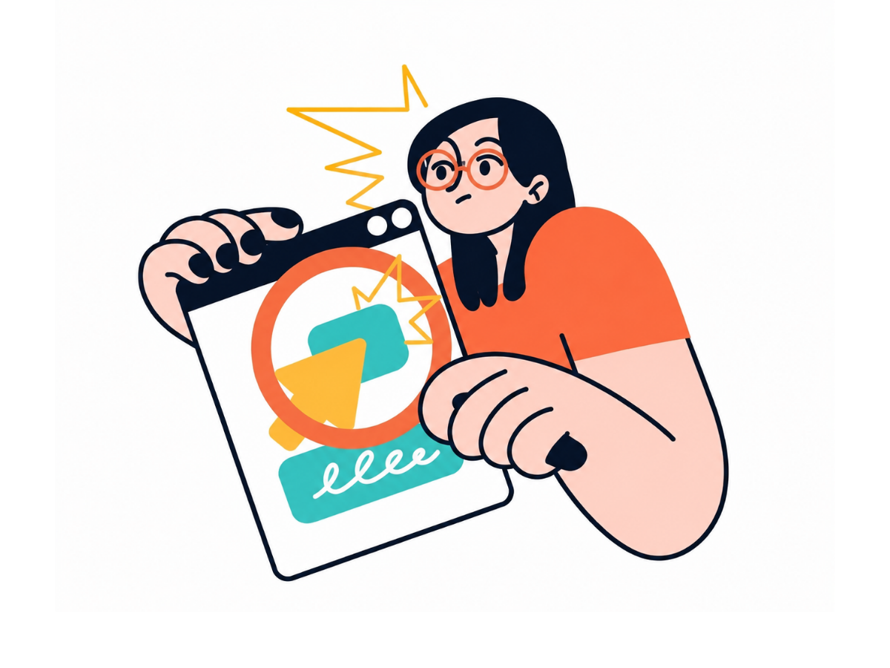

Build ideas, test early, and refine solutions through real feedback.
Test Early. Improve Faster.

Phase 04 of 5 - Prototype
80%
Why this phase matters
Phase 04 - Prototype
A prototype makes your idea tangible. It does not need to be perfect — it needs to be testable. Building early reveals problems you never anticipated and saves months of work in the wrong direction. The goal is to learn, not to impress.
What to do in this phase
1
Read this Quick Info section fully before taking the quiz.
2
Score 2 out of 3 on the quiz to unlock the Templates.
3
Complete all 3 templates. Use the example answers as a guide. Tick the checklist.
4
Click Submit to send your work to your supervisor for review.
Estimated time: 1 to 2 hours for this phase. You can save your progress and return any time.
Key tips and methods
Practical tips for this phase
-
Paper prototype: Draw screens on A4 paper; ask users to point to what they would tap
-
Figma or Canva: Free tools for basic digital wireframes
-
Physical: Use cardboard or foam for tangible product ideas
-
Wizard of Oz: You manually control the system while the user thinks it is automated — useful for AI features
Common beginner mistakes to avoid
Watch out for these errors
X
Spending too long making it look perfect — it is a test tool, not the final product
X
Building digitally before testing the concept on paper first
X
Not taking photos — evidence is required for your portfolio
X
Prototyping every feature — focus on the one core feature that solves the main problem
How this connects to the next phase
Link to next phase
Your prototype photos and description (T1 to T3) are the exact materials you use in Phase 05 Testing. Show the screens to real users and observe what confuses them.
Q1. What is a low-fidelity prototype?
A polished final product
A rough, quick model used to test ideas cheaply before investing resources
The final version of your code
The final user interface design
Low-fi prototypes (paper, cardboard, wireframes) are cheap and fast. The goal is to learn — not build the final product.
Q2. Why prototype before building the final solution?
Because the lecturer requires it
Because it helps you discover problems early when they are cheap to fix
Because digital tools are free
Because prototyping is faster than thinking
Every flaw found in a prototype costs almost nothing to fix. The same flaw in a finished product can take weeks to redo.
Q3. What should you do when your prototype fails a test?
Start a completely new project
Ignore the feedback and submit anyway
Treat it as valuable learning and refine the prototype
Ask your supervisor to fix it
Failure is the most valuable outcome of a prototype test. Every problem found is a problem prevented in the final solution.
0/3
Keep trying!
Need help? Go back to Quick Info. The answers are in the tips and common mistakes sections. Back to Quick Info
LOCKED
Complete the quiz with 2 out of 3 or higher to unlock the templates. Read Quick Info first.
Template 1
Prototype Description
Describe what it looks like, what type it is (paper/digital/physical), and what core feature it tests. Minimum 60 words.
0 words
Type: Paper prototype (low-fidelity)
Description: 6 hand-drawn screens on A4 paper representing main pages: Login, Dashboard, Phase Checklist, Template Form, Progress Bar, Supervisor Feedback.
Core feature tested: Can a student navigate from dashboard to a phase template without any instructions?
Materials used: A4 paper, markers, pencil, ruler.
Template 2
Build Steps
List step-by-step how you built the prototype. Minimum 5 steps, 10 words each.
0 words
Step 1: Sketched rough layout of each screen on rough paper first.
Step 2: Drew clean versions of 6 screens on separate A4 sheets.
Step 3: Labelled every button and input field clearly.
Step 4: Arranged screens in order to simulate the full user flow.
Step 5: Photographed each screen and uploaded to Google Drive.
Template 3
Evidence Link (Photo, Figma, or Drive)
Paste a link to your prototype photos, Figma file, or Google Drive folder.
0 words
Google Drive folder with all prototype photos:
https://drive.google.com/drive/folders/YOUR-FOLDER-LINK
Contains: 6 screen photos, 1 overview shot, 1 close-up of the navigation flow.
Completion Checklist
Before You Submit
Built a testable prototype (paper, digital, or physical)
Documented all build steps in enough detail to reproduce
Attached evidence (photos or link) — required for your portfolio
Ready to submit Phase 04 Prototype?
Your answers will be sent to Google Sheets for supervisor review. You can still edit and resubmit after this.